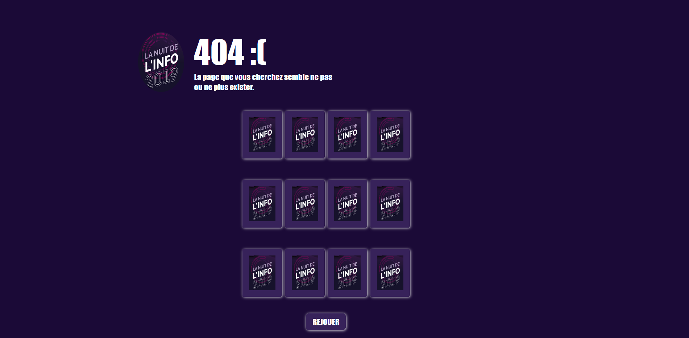

La nuit de l'info 2O19
Le projet
La nuit de l'info est un concours national d'informatique qui dure environ 16h, une cinquantaine de défis sont proposés par des entreprises avec des prix pour les gagnants de chaque défi. Il faut donc choisir jusqu'à 5 défis avec son équipe et les soumettres avant la fin de l'évenement.
J'ai eu la chance de participer avec quelques amis et de gagner une médaille d'or pour un des défis. J'étais le capitaine de mon équipe et cet évenement m'a appris comme il est compliqué de gérer une équipe de 10 personnes tout en travaillant de son côté
Nous avons eu la chance de gagner une médaille d'or pour le défis nommé "Enfile ta cape" dont le but était de créer une page d'erreur 404 interactive, nous avons gagné en compétition avec 88 autres équipes. Pour ce défis nous avons fait une page 404 avec un jeu du mémo, voici une image de cette page :
Ce que j'ai réalisé dans ce projet
Dans ce projet j'ai été capitaine d'une équipe de 10 personne (moi compris). J'ai réalisé quelques visuels, des images que nous avons intégré au site afin de réaliser certains défis, tel qu'un escape game. Mais cela n'était pas ma principale réalisation du projet. En effet, j'ai principalement fait de la gestion de projet durant ce projet, en effet, avec une équipe de 10 personne il est assez complexe de réaliser un seul site web, il a donc fallu beaucoup d'organisation, et je me suis chargé de cette tâche. J'ai donc dirigé mes camarades afin que toutes les parties puissent s'imbriquer correctement lors de la mutualisation du travail de chacun. J'ai également aidé toutes les différentes petites équipes qui s'étaient créé afin de travailler sur les différents projets, a réfléchir a tous les aspects de développements tel que le choix des technologies a utiliser, comment les implanter dans le site et autres réflexions indispensable au développement du site. J'ai aussi beaucoup travaillé sur le défis qui consistait a créer un escape game sur notre site, j'ai participé a toute la partie de conception et aidé en développant des petits bouts de code qui ont été intégré par la sous équipe qui s'occupait de ce défis.
Ce que j'ai appris dans ce projet
Au cours de ce projet, j'ai appris combien il était dur de diriger et coordonner une équipe et a quel point c'était un rôle unique et assez difficilement une double casquette. En effet, avant le début du projet, je ne pensais vraiment pas que mon rôle de capitaine allais être si important, je pensais vraiment que j'allais programmer comme tous mes autres camarades pendant plus d'une nuit. Cependant, lorsque la nuit de l'info a commencé, je me suis vite rendu compte qu'il allait falloir faire une croix sur mon idée première, car rien n'était organisé, tout partait dans tous les sens, et dans une équipe de 10, tout peut très rapidement partir dans des sens opposé sans que personne ne s'en rende compte. J'ai donc pris en main les choses, en discutant avec tous le monde de tout, en organisant les gens en plus petites équipes selon les défis sur lesquels ils voulaient travailler en faisant attention si il y avait des personnes avec qui ils ne voulaient pas travailler pour diverses raisons. J'ai ensuite durant toute la nuit de l'info, fais des point réguliers avec toutes les petites équipes afin de voir si tout allait bien, si je pouvais les aider en codant des choses moi même, ou en faisant des visuels s'ils avaient besoin, et je vérifiait également que tout allait bien et que tous les modules pourrait toujours s'implémenter dans l'unique site que nous devions faire. Celà m'a donc appris a gérer une équipe, et m'a fait me rendre compte de l'importance d'une personne qui coordonne tout le monde, surtout dans un projet où a la fin tout doit être mis ensemble dans le même code source, sur un même site web.